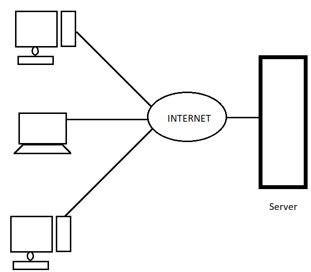

Client Server Architecture
In this type of architecture,there is a centralized computer(server)
to which every computer/work station/node is connected to.This
computer is mainly responsible to manage all the
resources available and provide them to the client computer as per
their request.Client and server may be on the same or connected
through a network.

Advantages of client server network:
-
Resources can be shared among clients.For example anti-virus.Thus
decreasing overall cost
- Security and monitoring is more easy.
Disadvantages of client/server network:
- Due to need of a seperate server/computer cost may rise.
-
Server can cause single point of failure.If server goes down,the
entire network could go down.
-
Maintainance and installation mostly requires technical staffs.
-
Servers and clients are prone to DOS attack ,phishing,MITM(Man in
the middle),etc